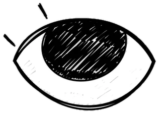

El chisme de la semana

Primera Estelar · Mercado de pases
¿Se nos va? Unfollow, conferencia cancelada y un avión: el misterio de Dante Robledo
El goleador de Atlético Bahía Dorada anda muy callado a diez días del cierre del mercado de pases de la Primera Estelar. Y aquí el silencio también es noticia.
Hola, titulares. El martes, Dante Robledo dejó de seguir la cuenta oficial de Atlético Bahía Dorada. El miércoles faltó a la conferencia de prensa por una “molestia muscular” que nadie vio en el entrenamiento. Y el jueves, dos hinchas juran que lo vieron en el aeropuerto con su representante. Lo confirmado es el unfollow. Lo que se rumorea es que Sporting Mirasol ya le guardó la camiseta nueve. El mercado cierra en diez días, y alguien en este club está contando las horas.
Clase exprés El mercado de pases no está en las Reglas de Juego de la IFAB: lo regulan la FIFA y cada federación. Fuera de la ventana de transferencias no se inscribe a nadie nuevo, salvo excepciones puntuales. Por eso aquí cada día cuenta. Te lo explicamos en Clase de Cancha.
Un beso al ángulo. — Muak